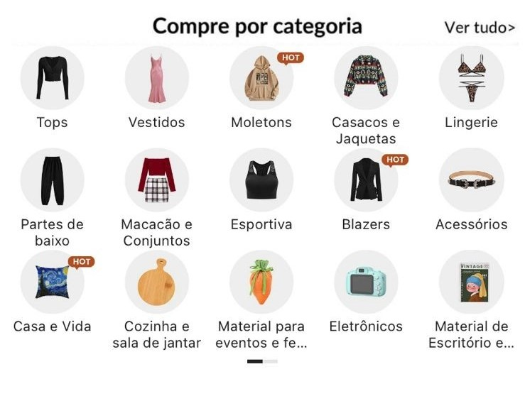

A SHEIN VAI ENCERRAR SUAS ATIVIDADES NO BRASIL?

No ano de 2020, ainda em meio a pandemia de COVID – 19 surge mais um e-commerce de sucesso entre as pessoas que são apaixonadas por compras on-line, a SHEIN, que não demorou muito para se tornar a queridinha na internet, uma vez que oferece itens bonitos e com um preço baixo comparada as varejistas do Brasil.
A Shein surgiu inicialmente como uma loja de vestidos de noiva, lá na China, em meados 2008 e tinha um outro nome, ZZKO. Mas logo em seguida, o seu dono, Chris Xu, expandiu os seus negócios passando a vender vestuários femininos e acessórios, e em 2010 já havia expandido as suas vendas a outros países, como Espanha e França. Atualmente, atua em 195 países e em 2015 passou a se chamar Shein, pois ele queria um nome fácil de ser lembrado.
Inicialmente os itens vendidos pela Shein não eram de fabricação própria, só no ano de 2016 que a empresa contratou a sua própria equipe, inicialmente com 800 pessoas para dar início a sua própria fábrica deixando de lado os fornecedores e passando a vender suas próprias peças.
A Shein chama atenção pela beleza e qualidade das peças, mas principalmente pelo preço baixo ofertado pelo site, que ainda conta com algumas modalidades de descontos, como cupons do próprio site, cupons de blogueiras e pontos adquiridos que são transformados em dólares que viram descontos. Ela faz previsões de tendencias e produz itens rapidamente após identificar uma nova tendencia de moda.
Ao entrar no site da Shein você se depara com uma infinidade de opções de roupas, tanto femininas como masculinas, infantil, pet, acessórios, calçados, eletrônicos, utensílios de casa, itens de decoração e até maquiagens.
Apesar de ser uma loja on-line, hoje a Shein conta com algumas lojas físicas inclusive no Brasil, sendo em São Paulo, Rio de Janeiro e Salvador.
A Shein tem números absurdos de seguidores e downloads, superando grandes e-commerces brasileiros como a Amazon. No Instagram conta com mais de 28 milhões de seguidores e no Tik Tok pouco mais de 6 milhões.
O fundador da Shein, Chris Xu, juntou-se ao raking das 100 pessoas mais ricas da China, ocupando do 25º lugar, com um patrimônio líquido em U$$10,5 bilhões. Segundo a última avaliação feita em 2022, a grande varejista chinesa estava avaliada em aproximadamente U$$100 bilhões.
COM TANTOS BENEFÍCIOS PARA OS SEUS USUÁRIOS, O QUE TEM CAUSADO TANTA CONFUSÃO E MEDO DA SHEIN ENCERRAR SUAS ATIVIDADES NO BRASIL?
No dia 13 de março, houve uma reunião com ministros, senadores e deputados do atual governo e que compõe a Frente Parlamentar do Empreendedorismo, que pediram para que algo fosse feito sobre o ‘’contrabando digital’’, alegando que essa prática tem que ser impedida, pois essas compras on-line sem taxação têm prejudicado a indústria e o comércio brasileiro agindo de forma desleal com os varejistas do país, uma vez que eles pagam muitos impostos para conseguir trabalhar conforme a lei.
O ‘’contrabando digital’’ citado acima é a importação que é feita através de lojas como Shein, Shopee e Ali Express, onde o cliente não paga nenhuma taxa para que esses produtos entrem no país, ou seja, além da compra ser mais barata o cliente ainda não paga impostos.
Lembrando que pela lei brasileira, toda e qualquer compra internacional deve ser taxada, considerando impostos e tributos. O imposto de importação é cobrado pela Receita Federal assim que a sua encomenda entra no Brasil e passa pela fiscalização, no centro de distribuição, porém existem alguns itens e situações que podem ser isentos dessa tributação.
De acordo com o Decreto/Lei nº1804/80 que dispõe sobre tributação simplificada das remessas postais internacionais, diz que Remessas Postais Internacionais de até U$$100 são isentas dessa taxação de Imposto de Importação, uma vez que seja remessa postal para pessoa física.
Sendo assim, para que uma importação não seja taxada ela precisa ter valor inferior a U$$100, o envio deve ser Remessa Postal Internacional via Correios e ainda o remetente e o destinatário devem ser pessoas físicas, ou seja, as compras na Shein não entram nessa lei de até U$$100 como muito foi falado na internet.
O atual Ministro da Fazenda, Fernando Haddad, tem sido pressionado nas redes sociais para que essas compras on-line, tanto na Shein, Shopee, Wish e Ali Express não sejam taxadas, uma vez que as compras feitas são de valores pequenos.
No governo do ex-presidente, Jair Bolsonaro, esse assunto também foi discutido, porém sem muito sucesso. Se entrasse em vigor a Medida Provisória para dificultar a venda de mercadorias estrangeiras pela internet, resultaria na elevação dos preços em até 60%.
Algumas pessoas têm relatado que a taxação já começou, que muitas compras, inclusive de valores baixíssimos já tem sido taxada, porém o assunto tem sido discutido entre os parlamentares e o Ministro da Fazenda Fernando Haddad, mas ainda não temos uma resposta concreta do que vai acontecer com esses e-commerces aqui no Brasil.
.jpeg)